PyIT2FLS
PyIT2FLS is a NumPy- and SciPy-based toolkit designed for working with Type 1 and Interval Type 2 Fuzzy Logic Systems.
The toolkit is distributed under the MIT License. If you use PyIT2FLS in your work, please cite the preprint of our paper, PyIT2FLS: A New Python Toolkit for Interval Type 2 Fuzzy Logic Systems.
BibTeX:
@misc{haghrah2019pyit2fls,
title={PyIT2FLS: A New Python Toolkit for Interval Type 2 Fuzzy Logic Systems},
author={Amir Arslan Haghrah and Sehraneh Ghaemi},
year={2019},
eprint={1909.10051},
archivePrefix={arXiv},
primaryClass={eess.SY}
}
MLA:
Haghrah, Amir Arslan, and Sehraneh Ghaemi. "PyIT2FLS: A New Python Toolkit for Interval Type 2 Fuzzy Logic Systems." arXiv preprint arXiv:1909.10051 (2019).
Installation
PyIT2FLS can be installed using one of the following methods:
From Source
Download and unzip the source code into a directory. Then, navigate to the PyIT2FLS folder and run the following command:
pip3 install .
Using pip
Alternatively, you can install or upgrade PyIT2FLS directly from PyPI using:
pip3 install --upgrade pyit2fls
Support My Work with Tether (USDT)
If you find this Python library helpful and wish to support its ongoing development, your donations are greatly appreciated. You can contribute Tether (USDT) to the following wallet address:
TN1stagYLtqq4MUKPj6Q3fqtH3GittRawE
Thank you for your generosity—it directly helps maintain and enhance this project!
Getting Started
This section introduces basic examples of how to use the PyIT2FLS library. For more advanced use cases, please refer to the examples directory in the PyIT2FLS github repository.
Example 1: Defining Type 1 Fuzzy Sets and Performing AND/OR Operators on Them
In this example, we define two trapezoidal Type 1 fuzzy sets and apply fuzzy AND and OR operators on them. First, we create the trapezoidal fuzzy sets using the T1FS class and the trapezoid_mf function. Then, we plot the fuzzy sets together using the T1FS_plot function:
from pyit2fls import (T1FS, trapezoid_mf, T1FS_plot, )
from numpy import linspace
domain = linspace(-1.5, 1.5, 100)
set1 = T1FS(domain, trapezoid_mf, [-1.25, -0.75, -0.25, 0.25, 1.])
set2 = T1FS(domain, trapezoid_mf, [-0.25, 0.25, 0.75, 1.25, 1.])
T1FS_plot(set1, set2, legends=["Trapezoidal Set 1", "Trapezoidal Set 2", ])
The output of this code is shown below:

Next, we compute the AND of these two sets using two different T-norms:
from pyit2fls import (min_t_norm, product_t_norm, T1FS_AND, )
set3 = T1FS_AND(domain, set1, set2, min_t_norm)
set4 = T1FS_AND(domain, set1, set2, product_t_norm)
T1FS_plot(set3, set4, legends=["Fuzzy Set 3", "Fuzzy Set 4", ])
The output of this code is shown below:

Finally, we compute the OR of these two sets using two different S-norms:
from pyit2fls import (max_s_norm, probabilistic_sum_s_norm, T1FS_OR, )
set5 = T1FS_OR(domain, set1, set2, max_s_norm)
set6 = T1FS_OR(domain, set1, set2, probabilistic_sum_s_norm)
T1FS_plot(set5, set6, legends=["Fuzzy Set 5", "Fuzzy Set 6", ])
The output of this code is shown below:
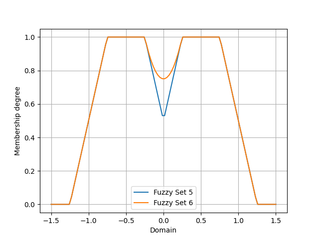{kind=link}
Example 2: Defining Type 1 TSK Fuzzy Systems
In this example, we define a simple Type 1 TSK fuzzy system, calculate its output for specific inputs, and plot its control surface. First, we define the T1FS objects representing the inputs of the fuzzy system.
from pyit2fls import (T1TSK, T1FS, gaussian_mf, T1FS_plot, )
from numpy import (linspace, meshgrid, zeros, )
from mpl_toolkits import mplot3d
import matplotlib.pyplot as plt
from matplotlib import cm
from matplotlib.ticker import (LinearLocator, FormatStrFormatter, )
domain = linspace(-1.5, 1.5, 100)
t1fs1 = T1FS(domain, gaussian_mf, [-0.5, 0.5, 1.])
t1fs2 = T1FS(domain, gaussian_mf, [ 0.5, 0.5, 1.])
T1FS_plot(t1fs1, t1fs2, legends=["Gaussian Set 1", "Gaussian Set 2", ])
The output of this code is shown below:

As shown, there are two Gaussian fuzzy sets. The parameters of a Gaussian membership function are the mean, standard deviation, and height, respectively. Next, we define the T1TSK system along with its input and output variables.
myT1TSK = T1TSK()
myT1TSK.add_input_variable("X1")
myT1TSK.add_input_variable("X2")
myT1TSK.add_output_variable("Y")
Next, we define the outputs of the fuzzy rules. These outputs must be functions of the inputs. Since our myT1TSK system has two inputs, each output function must also depend on two inputs. Let’s assume the system includes four rules.
def Y1(X1, X2):
return 2. * X1 + 3. * X2
def Y2(X1, X2):
return -1.5 * X1 + 2. * X2
def Y3(X1, X2):
return -2. * X1 - 1.2 * X2
def Y4(X1, X2):
return 5. * X1 - 2.5 * X2
After defining the output functions, we define the rules using the following rule base:
X2: t1fs1 |
X2: t1fs2 |
|
X1: t1fs1 |
Y: Y1 |
Y: Y2 |
X1: t1fs2 |
Y: Y3 |
Y: Y4 |
myT1TSK.add_rule([("X1", t1fs1), ("X2", t1fs1)],
[("Y", Y1), ])
myT1TSK.add_rule([("X1", t1fs1), ("X2", t1fs2)],
[("Y", Y2), ])
myT1TSK.add_rule([("X1", t1fs2), ("X2", t1fs1)],
[("Y", Y3), ])
myT1TSK.add_rule([("X1", t1fs2), ("X2", t1fs2)],
[("Y", Y4), ])
Now, it is time to evaluate the system’s output for various points in the universe of discourse and plot the control surface:
X1, X2 = meshgrid(domain, domain)
O = zeros(shape=X1.shape)
for i, x1 in zip(range(len(domain)), domain):
for j, x2 in zip(range(len(domain)), domain):
o = myT1TSK.evaluate({"X1":x1, "X2":x2}, params=(x1, x2))
O[i, j] = o["Y"]
fig = plt.figure()
ax = fig.add_subplot(111, projection="3d")
surf = ax.plot_surface(X1, X2, O, cmap=cm.coolwarm,
linewidth=0, antialiased=False)
ax.zaxis.set_major_locator(LinearLocator(10))
ax.zaxis.set_major_formatter(FormatStrFormatter('%.02f'))
fig.colorbar(surf, shrink=0.5, aspect=5)
plt.show()
Finally, the output of this code is shown below:
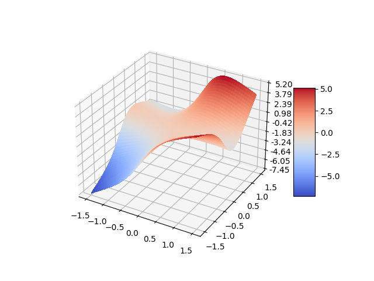{kind=link}
Example 3: Defining Type 1 Mamdani Fuzzy Systems
In this example, we define a simple Type 1 Mamdani fuzzy system using PyIT2FLS. We calculate its output for specific inputs and plot the corresponding control surface. First, we define the T1FS objects representing the inputs of the fuzzy system.
from pyit2fls import (T1Mamdani, T1FS, gaussian_mf, T1FS_plot, )
from numpy import (linspace, meshgrid, zeros, )
from mpl_toolkits import mplot3d
import matplotlib.pyplot as plt
from matplotlib import cm
from matplotlib.ticker import (LinearLocator, FormatStrFormatter, )
inputDomain = linspace(-1.5, 1.5, 100)
t1fs1 = T1FS(inputDomain, gaussian_mf, [-0.5, 0.5, 1.])
t1fs2 = T1FS(inputDomain, gaussian_mf, [ 0.5, 0.5, 1.])
T1FS_plot(t1fs1, t1fs2, legends=["Gaussian Set 1", "Gaussian Set 2", ])
The output of this code is shown below:
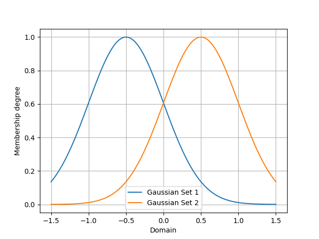{kind=link}
As shown, there are two Gaussian fuzzy sets describing the input variables. Next, we define the T1FS objects representing the outputs of the fuzzy system.
outputDomain = linspace(-10., 10., 1000)
t1fs3 = T1FS(outputDomain, gaussian_mf, [-7.5, 2.0, 1.])
t1fs4 = T1FS(outputDomain, gaussian_mf, [-2.5, 2.0, 1.])
t1fs5 = T1FS(outputDomain, gaussian_mf, [ 2.5, 2.0, 1.])
t1fs6 = T1FS(outputDomain, gaussian_mf, [ 7.5, 2.0, 1.])
T1FS_plot(t1fs3, t1fs4, t1fs5, t1fs6,
legends=["Gaussian Set 3", "Gaussian Set 4",
"Gaussian Set 5", "Gaussian Set 6", ])
In this step, we define four sets. For all possible fuzzy rules, we can assign a distinct output. The output T1FS objects are as follows:

Now, it is time to define the Type 1 Mamdani system along with its input and output variables. The inference engine and defuzzification method can be chosen from several well-known options (refer to the documentation for more details). In this example, we use the “Product” inference engine and the center of gravity (“CoG”) defuzzification method. Additionally, we name the inputs “X1” and “X2” and the output “Y.”
myT1Mamdani = T1Mamdani(engine="Product", defuzzification="CoG")
myT1Mamdani.add_input_variable("X1")
myT1Mamdani.add_input_variable("X2")
myT1Mamdani.add_output_variable("Y")
After defining the T1Mamdani system, the next step is to define the rule base for the fuzzy system. The rules shown in the following table will be used to construct the rule base.
X2: t1fs1 |
X2: t1fs2 |
|
X1: t1fs1 |
Y: t1fs3 |
Y: t1fs4 |
X1: t1fs2 |
Y: t1fs5 |
Y: t1fs6 |
The code to add rules to the rule base is as follows:
myT1Mamdani.add_rule([("X1", t1fs1), ("X2", t1fs1)], [("Y", t1fs3), ])
myT1Mamdani.add_rule([("X1", t1fs1), ("X2", t1fs2)], [("Y", t1fs4), ])
myT1Mamdani.add_rule([("X1", t1fs2), ("X2", t1fs1)], [("Y", t1fs5), ])
myT1Mamdani.add_rule([("X1", t1fs2), ("X2", t1fs2)], [("Y", t1fs6), ])
Finally, it is time to evaluate the system’s output for various points in the universe of discourse and plot the control surface:
X1, X2 = meshgrid(inputDomain, inputDomain)
O = zeros(shape=X1.shape)
for i, x1 in zip(range(len(inputDomain)), inputDomain):
for j, x2 in zip(range(len(inputDomain)), inputDomain):
s, c = myT1Mamdani.evaluate({"X1":x1, "X2":x2})
O[i, j] = c["Y"]
fig = plt.figure()
ax = fig.add_subplot(111, projection="3d")
surf = ax.plot_surface(X1, X2, O, cmap=cm.coolwarm,
linewidth=0, antialiased=False)
ax.zaxis.set_major_locator(LinearLocator(10))
ax.zaxis.set_major_formatter(FormatStrFormatter('%.02f'))
fig.colorbar(surf, shrink=0.5, aspect=5)
plt.show()
And the output of this code is shown below:
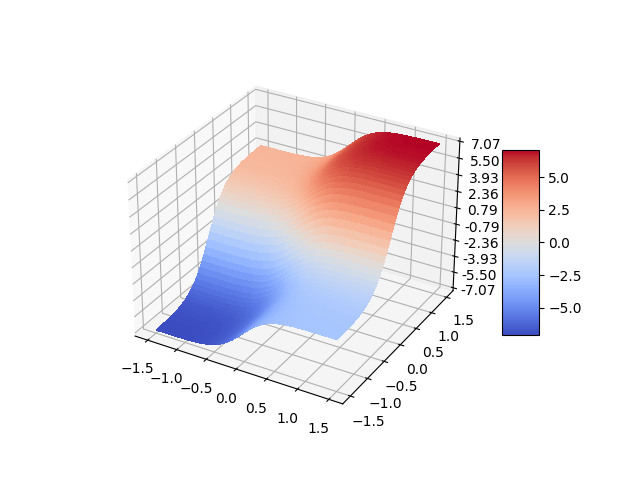{kind=link}
Example 4: Defining Interval Type 2 Fuzzy Sets
In this example, we define and plot ten well-known types of interval Type 2 fuzzy sets. Before using the IT2FS class, we perform some initial imports and define the universe of discourse.
The IT2FS class requires five parameters to create an interval Type 2 fuzzy set:
Domain: The universe of discourse.
Upper membership function: A function defining the upper bound.
Parameters of the upper membership function: The parameters required by the upper membership function.
Lower membership function: A function defining the lower bound.
Parameters of the lower membership function: The parameters required by the lower membership function.
from pyit2fls import (IT2FS, tri_mf, const_mf, rtri_mf, ltri_mf,
trapezoid_mf, gaussian_mf, IT2FS_Gaussian_UncertMean,
IT2FS_Gaussian_UncertStd, R_IT2FS_Gaussian_UncertStd,
L_IT2FS_Gaussian_UncertStd, IT2FS_plot, )
from numpy import linspace
domain = linspace(0, 4, 1001)
The first IT2FS we define is the constant interval Type 2 fuzzy set. This set requires only the UMF and LMF as constant membership functions. The constant membership function has a single parameter: its value.
The check_set option, when defining an IT2FS, can be used for debugging purposes. Sometimes, errors in the fuzzy set parameters can cause the LMF to have a greater membership degree than the UMF at certain points in the universe of discourse. If check_set is set to True, an exception will be raised in such cases.
Const = IT2FS(domain, const_mf, [1.0], const_mf, [0.9], check_set=True)
The next IT2FS is the triangular interval Type 2 fuzzy set. It uses triangular membership functions for both the UMF and LMF. The parameters for a triangular membership function, defined by tri_mf, include the left, center, and right points, as well as the height of the triangle.
Tri = IT2FS(domain, tri_mf, [0.7, 1.0, 1.3, 0.3], tri_mf, [0.8, 1.0, 1.2, 0.2], check_set=True)
We can also define left and right triangular interval Type 2 fuzzy sets using the rtri_mf and ltri_mf functions. The parameters required for rtri_mf are the right, center, and height. Similarly, for ltri_mf, the parameters are the left, center, and height.
RTri = IT2FS(domain, rtri_mf, [1.85, 1.25, 0.8], rtri_mf, [1.75, 1.15, 0.8], check_set=True)
LTri = IT2FS(domain, ltri_mf, [0.15, 0.75, 0.7], ltri_mf, [0.25, 0.85, 0.7], check_set=True)
The next well-known interval Type 2 fuzzy set is the trapezoidal set. We can define it using the trapezoidal membership function, trapezoid_mf. It has five parameters: left, left-center, right-center, right, and height.
Trapezoid = IT2FS(domain,
trapezoid_mf, [0.45, 0.85, 1.15, 1.55, 0.5],
trapezoid_mf, [0.55, 0.95, 1.05, 1.45, 0.45],
check_set=True)
We can also define Gaussian-type sets, including general Gaussian sets, Gaussian sets with uncertain mean values, and Gaussian sets with uncertain standard deviation values. As a general form, Gaussian sets can be defined using the IT2FS class and the gaussian_mf function. The parameters for gaussian_mf are the mean value, standard deviation, and height.
Defining Gaussian sets with uncertain mean values and Gaussian sets with uncertain standard deviation values is simplified by the functions IT2FS_Gaussian_UncertMean and IT2FS_Gaussian_UncertStd. The inputs to IT2FS_Gaussian_UncertMean are the domain and a list of parameters, which include the mean center, mean spread, standard deviation, and height. For IT2FS_Gaussian_UncertStd, the inputs are similar, but the parameters list consists of the mean, standard deviation center, standard deviation spread, and height.
Gaussian = IT2FS(domain,
gaussian_mf, [2.25, 0.1, 0.5],
gaussian_mf, [2.25, 0.05, 0.4],
check_set=True)
Gaussian_UncertMean = IT2FS_Gaussian_UncertMean(domain, [2.5, 0.1, 0.1, 0.5])
Gaussian_UncertStd = IT2FS_Gaussian_UncertStd(domain, [2.75, 0.1, 0.05, 0.5])
There are two other widely used Gaussian-type fuzzy sets in applications, for which PyIT2FLS provides specific functions to define them easily: right-sided and left-sided Gaussian interval Type 2 fuzzy sets with uncertain standard deviation values. The functions for defining these sets are R_IT2FS_Gaussian_UncertStd and L_IT2FS_Gaussian_UncertStd.
The inputs to these functions are the domain and a parameters list. The parameters list for both functions should include the mean, standard deviation center, standard deviation spread, and height.
RGaussian_UncertStd = R_IT2FS_Gaussian_UncertStd(domain, [3.25, 0.2, 0.05, 0.6])
LGaussian_UncertStd = L_IT2FS_Gaussian_UncertStd(domain, [3.75, 0.2, 0.05, 0.6])
Finally, let’s plot all of these sets using the IT2FS_plot function:
IT2FS_plot(Const, Tri, RTri, LTri, Trapezoid, Gaussian,
Gaussian_UncertMean, Gaussian_UncertStd,
RGaussian_UncertStd, LGaussian_UncertStd,
legends = ["Const Set",
"Triangular Set",
"Right Triangular Set",
"Left Triangular Set",
"Trapezoid",
"Gaussian",
"G. with Uncertain Mean",
"G. with Uncertain Std",
"Right G. with Uncertain Std",
"Left G. with Uncertain Std", ])
The output of this code is shown below:
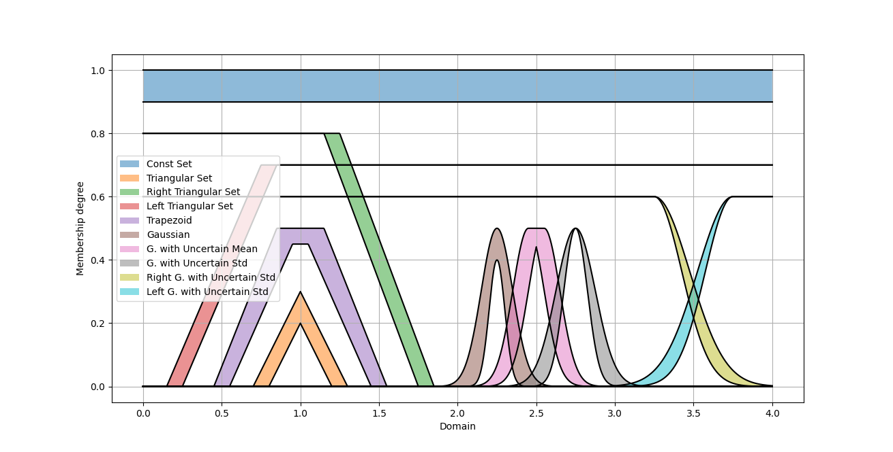{kind=link}
Example 5. Performing MEET and JOIN Operators on IT2FSs
In this example, we define two IT2FS s and then calculate their MEET and JOIN operators.
from pyit2fls import (IT2FS, R_IT2FS_Gaussian_UncertStd,
L_IT2FS_Gaussian_UncertStd, IT2FS_plot,
hamacher_product_t_norm, probabilistic_sum_s_norm,
meet, join, )
from numpy import linspace
domain = linspace(1, 2, 1001)
RGaussian_UncertStd = R_IT2FS_Gaussian_UncertStd(domain, [1.25, 0.2, 0.05, 0.6])
LGaussian_UncertStd = L_IT2FS_Gaussian_UncertStd(domain, [1.75, 0.2, 0.05, 0.6])
IT2FS_plot(RGaussian_UncertStd, LGaussian_UncertStd,
legends=["IT2FS1",
"IT2FS2", ])
As can be seen, we defined a right and a left Gaussian interval Type 2 fuzzy set with uncertain standard deviation values. The output plot of these fuzzy sets is shown below:
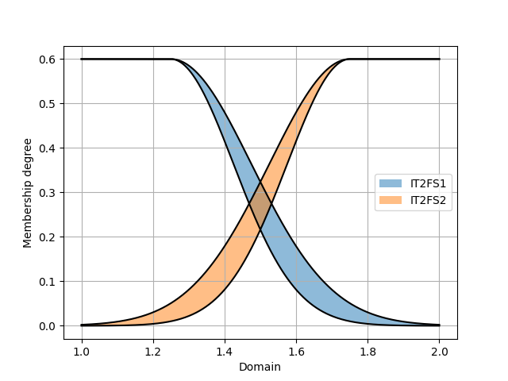{kind=link}
Now, we will calculate the MEET and JOIN using the two functions meet and join. The first three inputs for both functions are the same: the domain, the first IT2FS, and the second IT2FS. However, the fourth input for meet should be a T-norm, while for join, it should be an S-norm.
MEET = meet(domain, RGaussian_UncertStd, LGaussian_UncertStd, hamacher_product_t_norm)
JOIN = meet(domain, RGaussian_UncertStd, LGaussian_UncertStd, probabilistic_sum_s_norm)
IT2FS_plot(MEET, JOIN,
legends=["MEET",
"JOIN", ])
Using the Hamacher product T-norm and the probabilistic sum S-norm, the resulting output sets are shown below:
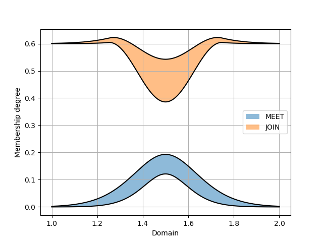{kind=link}
Example 6: Defining Interval Type 2 TSK Fuzzy Systems
In this example, we define a simple interval Type 2 TSK fuzzy system with two inputs and one output. Two IT2FS s will describe the input variables’ universe of discourse, and there will be four different outputs corresponding to four rules in the system’s rule-base. First, we define the fuzzy sets as follows:
from pyit2fls import (IT2TSK, IT2FS_Gaussian_UncertStd, IT2FS_plot,
product_t_norm, max_s_norm, )
from mpl_toolkits import mplot3d
import matplotlib.pyplot as plt
from matplotlib import cm
from matplotlib.ticker import LinearLocator, FormatStrFormatter
from numpy import linspace, meshgrid, zeros
domain = linspace(0., 1., 100)
X1, X2 = meshgrid(domain, domain)
IT2FS1 = IT2FS_Gaussian_UncertStd(domain, [0, 0.2, 0.05, 1.])
IT2FS2 = IT2FS_Gaussian_UncertStd(domain, [1., 0.2, 0.05, 1.])
IT2FS_plot(IT2FS1, IT2FS2, title="Sets",
legends=["IT2FS1", "IT2FS2"])
The following figure illustrates the defined fuzzy sets:
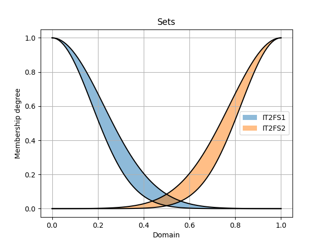{kind=link}
Next, we define the system using the IT2TSK class. The constructor of this class accepts two inputs: the T-norm and the S-norm to be used. We then define the names of the input and output variables using the add_input_variable and add_output_variable functions for later use. The rules of the system are added with the add_rule function, which requires two inputs: the antecedent and the consequent, both of which are lists of tuples.
Antecedent is a list of tuples where each tuple assigns a variable to an IT2FS. The first element of each tuple must be the input variable name (as a string), and the second element must be an IT2FS.
Consequent is a list of tuples where each tuple assigns a variable to an output state. The first element of each tuple must be the output variable name (as a string), and the second element must be a dictionary. This dictionary represents the output polynomial for the rule. For example, if the output polynomial is 2*X1 + 4*X2 + 5, the corresponding dictionary would be {“const”: 5., “X1”: 2., “X2”: 4.}. Note that this example is for an IT2 TSK FLS with two inputs, named X1 and X2.
The following code demonstrates how to define the IT2TSK, define input and output variables, and add rules to the rule base of the system.
myIT2FLS = IT2TSK(product_t_norm, max_s_norm)
myIT2FLS.add_input_variable("X1")
myIT2FLS.add_input_variable("X2")
myIT2FLS.add_output_variable("Y")
myIT2FLS.add_rule([("X1", IT2FS1), ("X2", IT2FS1)],
[("Y", {"const":1., "X1":1., "X2":1.}), ])
myIT2FLS.add_rule([("X1", IT2FS1), ("X2", IT2FS2)],
[("Y", {"const":0.5, "X1":1.5, "X2":0.5}), ])
myIT2FLS.add_rule([("X1", IT2FS2), ("X2", IT2FS1)],
[("Y", {"const":-0.2, "X1":2., "X2":0.1}), ])
myIT2FLS.add_rule([("X1", IT2FS2), ("X2", IT2FS2)],
[("Y", {"const":-1., "X1":4., "X2":-0.5}), ])
Now, let’s evaluate the system’s output for different points in the universe of discourse to obtain the output surface of the system and plot it.
O = zeros(shape=X1.shape)
for i, x1 in zip(range(len(domain)), domain):
for j, x2 in zip(range(len(domain)), domain):
o = myIT2FLS.evaluate({"X1":x1, "X2":x2})
O[i, j] = o["Y"]
fig = plt.figure()
ax = fig.add_subplot(111, projection="3d")
surf = ax.plot_surface(X1, X2, O, cmap=cm.coolwarm,
linewidth=0, antialiased=False)
ax.zaxis.set_major_locator(LinearLocator(10))
ax.zaxis.set_major_formatter(FormatStrFormatter('%.02f'))
fig.colorbar(surf, shrink=0.5, aspect=5)
plt.show()
Finally, the output surface of the system is shown below:
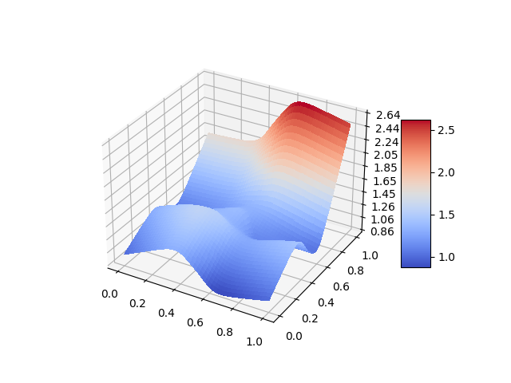{kind=link}
Example 7: Defining Interval Type 2 Mamdani Fuzzy Systems
In this seventh example, we will create an interval Type 2 Mamdani fuzzy system using the IT2Mamdani class. The system has two inputs and one output. Each input variable is described by three IT2FS*s in its dedicated universe of discourse. The output of the system is described using two *IT2FS s in its own universe of discourse. First, we define the input sets as follows:
from pyit2fls import IT2Mamdani, IT2FS_Gaussian_UncertStd, IT2FS_plot, \
min_t_norm, max_s_norm, crisp
from numpy import linspace, meshgrid, zeros
from mpl_toolkits import mplot3d
import matplotlib.pyplot as plt
from matplotlib import cm
from matplotlib.ticker import LinearLocator, FormatStrFormatter
domain1 = linspace(1., 2., 100)
domain2 = linspace(2., 3., 100)
domain3 = linspace(3., 4., 100)
Small1 = IT2FS_Gaussian_UncertStd(domain1, [1.0, 0.2, 0.025, 1.])
Small2 = IT2FS_Gaussian_UncertStd(domain2, [2.0, 0.3, 0.025, 1.])
Medium1 = IT2FS_Gaussian_UncertStd(domain1, [1.5, 0.2, 0.025, 1.])
Medium2 = IT2FS_Gaussian_UncertStd(domain2, [2.5, 0.3, 0.025, 1.])
Large1 = IT2FS_Gaussian_UncertStd(domain1, [2.0, 0.2, 0.025, 1.])
Large2 = IT2FS_Gaussian_UncertStd(domain2, [3.0, 0.3, 0.025, 1.])
IT2FS_plot(Small1, Medium1, Large1,
legends=["Small 1", "Medium 1", "large 1"])
IT2FS_plot(Small2, Medium2, Large2,
legends=["Smal 2l", "Medium 2", "large 2"])
Based on this code, the IT2FS s describing the first input variable are as follows:

and the fuzzy sets for the second input variable are as follows:

Next, we define the output sets as follows:
Low1 = IT2FS_Gaussian_UncertStd(domain3, [3., 0.3, 0.025, 1.])
High1 = IT2FS_Gaussian_UncertStd(domain3, [4., 0.3, 0.025, 1.])
IT2FS_plot(Low1, High1,
legends=["Low", "High"])
Which are represented below:
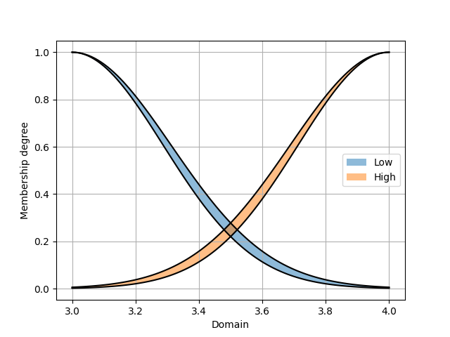{kind=link}
Here’s a refined version of your text:
After defining the required IT2FS*s, it’s time to define the fuzzy system using the *IT2Mamdani class. The IT2Mamdani class requires a T-norm and an S-norm as constructor parameters. The names of the input and output variables should be predefined using the add_input_variable and add_output_variable functions.
Once the input and output variables are defined, the rule base of the system can be established using the add_rule function. Similar to IT2TSK, the add_rule function for IT2Mamdani accepts two inputs: antecedent and consequent. Antecedent is a list of tuples, where each tuple represents the assignment of a variable to an IT2FS. The first element of the tuple must be the input variable name as a string, and the second element must be an IT2FS. Consequent is a list of tuples, where each tuple represents the assignment of a variable to an IT2FS. The first element of the tuple must be the output variable name as a string, and the second element must be an IT2FS.
myIT2FLS = IT2Mamdani(min_t_norm, max_s_norm)
myIT2FLS.add_input_variable("X1")
myIT2FLS.add_input_variable("X2")
myIT2FLS.add_output_variable("Y")
myIT2FLS.add_rule([("X1", Small1), ("X2", Small2)], [("Y", Low1), ])
myIT2FLS.add_rule([("X1", Small1), ("X2", Medium2)], [("Y", Low1), ])
myIT2FLS.add_rule([("X1", Small1), ("X2", Large2)], [("Y", Low1), ])
myIT2FLS.add_rule([("X1", Medium1), ("X2", Small2)], [("Y", Low1), ])
myIT2FLS.add_rule([("X1", Medium1), ("X2", Medium2)], [("Y", Low1), ])
myIT2FLS.add_rule([("X1", Medium1), ("X2", Large2)], [("Y", High1), ])
myIT2FLS.add_rule([("X1", Large1), ("X2", Small2)], [("Y", High1), ])
myIT2FLS.add_rule([("X1", Large1), ("X2", Medium2)], [("Y", High1), ])
myIT2FLS.add_rule([("X1", Large1), ("X2", Large2)], [("Y", High1), ])
After defining our fuzzy system, it’s time to evaluate it over the universe of discourse and plot the output surface.
X1, X2 = meshgrid(domain1, domain2)
Z1 = zeros(shape=(len(domain1), len(domain2)))
for i, x1 in zip(range(len(domain1)), domain1):
for j, x2 in zip(range(len(domain2)), domain2):
it2out, tr = myIT2FLS.evaluate({"X1":x1, "X2":x2})
Z1[i, j] = crisp(tr["Y"])
fig = plt.figure()
ax = fig.add_subplot(111, projection="3d")
surf = ax.plot_surface(X1, X2, Z1, cmap=cm.coolwarm,
linewidth=0, antialiased=False)
ax.zaxis.set_major_locator(LinearLocator(10))
ax.zaxis.set_major_formatter(FormatStrFormatter('%.02f'))
fig.colorbar(surf, shrink=0.5, aspect=5)
plt.show()
The output surface of the system is as follows:
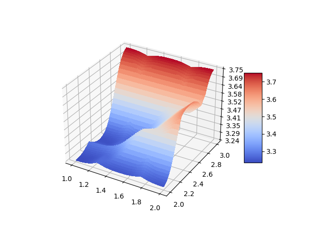{kind=link}